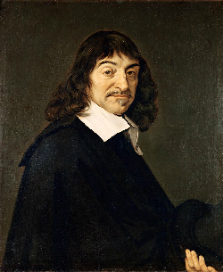

フランスの大陸合理論の哲学者。近代哲学の父。

デカルト。
画像はパブリックドメイン。
自分の書いたブログ「わたしの名はフレイ」2020/09/07より。
デカルトは、近代哲学の父と言われるフランスの哲学者。
「われ思う、ゆえにわれあり」とする考え方や、人間を心と体のロボットであるとする二元論が有名で、数学としては代数のスタイルを作ったとか、デカルト座標や解析学を始めたことが有名である。
僕が好きなのは「方法的懐疑」という考え方で、
１．それが真実だと思わない限り受け入れない
２．小さな部分に分割して考える
３．単純なものから複雑なものを推論して考える
４．全てがきちんと正しいものかきちんと検査して取りまとめる
という、「誰にでもできる合理的な懐疑の考え方」を述べた。
これを、「全てのことを疑う」と言う。
デカルトの本は哲学書のわりには読みやすく、薄いので、僕も方法序説を読んだことがあるが、逆にカントやヘーゲルは小難しく分厚いので、入門本や解説本が必要である。
特に、ヘーゲルは何も知らずに読むと「何を言っているか分からない」。
話をデカルトに戻すと、兵士だったデカルトはヨーロッパ中を旅してまわり、また科学者としても解剖学などたくさんのことを学んだが、「唯一役に立ったのは数学だけだ」と語っている。
当時デカルトが住んでいたオランダは、交易などの関係で進んだ場所だった。
デカルトはフランス人の数学者で、近代哲学の父と呼ばれる。彼の著作、主に「方法序説」と「省察」から、ヨーロッパで始まった独特のスタイルを持つ「たくさんの哲学者が真理を考え著作として発表する」という「近代哲学」が始まった。
デカルトは難しいと言われることが多いが、カントやヘーゲルのような「小難しい文章」では決してない。デカルトの著作は、薄くて、読みやすくて、面白い。簡単にすぐに読めて、誰でも同じように考えられる。当時ラテン語で書かれていた古典的著作とは逆に、平易なフランス語で書かれていることも特徴である。
中世の暗愚な時代、デカルトの合理論から、ヨーロッパの科学革命が始まった。自由な文化と理性を信じる「科学革命」は、イギリス経験論の哲学者やカント・ヘーゲルなどとともに、「経験的に宇宙のことを実験と証明から分かる」という「数学・物理学の革命」を生み出した。
逆に、合理主義の行き過ぎから、「全てを疑い、理性しか信じない」という「偏った理性主義」を生み出した、という負の側面もある。
デカルトは、あらゆる全てのことを疑う。だが、そこで疑っている自分が存在することは、疑っていると言う行為から見て、唯一正しい、とする。
後日注記：「自分しか信じない」デカルトの哲学だが、ここからヘーゲルのような「自我の発達と進歩の過程」を考える哲学や、経験論・言語哲学・現象学のような新しい哲学・心理学思想が生まれていった。
デカルトは、考える方法として、
１．それが真実だと思わない限り受け入れない
２．小さな部分に分割して考える
３．単純なものから複雑なものを推論して考える
４．全てがきちんと正しいものかきちんと検査して取りまとめる
と言う、「誰にでも出来る哲学的方法論」を考えた。
後日注記：まさに、速断を避けて強固にこれらの方法を守ることで、デカルトはこの世界が全て分かることを発見した。
デカルトは、人間を心と体の二元論にする。これは、メカニック的な「人間は機械である」と言う仮定に基づいている。
デカルトは兵隊として入隊し、旅人としてヨーロッパ中を渡り歩く。住み慣れたオランダは、当時は先進的な場所だった。
科学者としてのデカルトは、たくさんの分野を学んだものの、ほとんどは役に立たず、「数学だけが唯一役に立った」と言っている。
数学者としてのデカルトは、デカルト座標系や次数の考え方を作ったり、解析学として代数学と幾何学の統合などに取り組んだ。みんなが学ぶX座標やY座標、そしてa,b,cとx,y,zを用いて次数の多い方から整理していく数学のスタイルは、デカルトが考案したものである。
「方法序説」より引用。
“... 論理学を構成させた多くの教則の代りに、守ることをただの一度も怠らぬという堅固一徹な決心をもってしたならば、次の四つで十分である、と私は確信した。
第一は、明証的に真であると認めることなしには、いかなる事をも真であるとして受け取らぬこと、すなわち、よく注意して速断と偏見を避けること、そうして、それを疑ういかなる隙もないほど、それほどまで明晰に、それほどまで判明に、私の心に現れるもののほかは、何ものをも私の判断に取りいれぬということ。
第二は、私の研究しようとする問題のおのおのを、できうるかぎり多くの、そうして、それらのものをよくよく解決するために求められるかぎり細かな、小部分に分割すること。
第三は、私の思索を順序に従ってみちびくこと、知るに最も単純で、最も容易であるものからはじめて、最も複雑なものの認識まで少しずつ、だんだんと登りゆき、なお、それ自体としては互になんの順序も無い対象のあいだに順序を仮定しながら。
最後のものは、何一つ私はとり落とさなかったと保証されるほど、どの部分についても完全な枚挙を、全般にわたって余すところなき再検査を、あらゆる場合に行うこと。”―デカルト
「方法序説」、「情念論」、「省察」、など。
デカルトは、自己を考える「コギト命題」と方法的懐疑を考えた数学者の哲学者です。代数学と幾何学を統合して解析学を創始し、今の数学で言うXY座標や累乗を作ったりしました。
Wikipedia
Wikisource
書籍